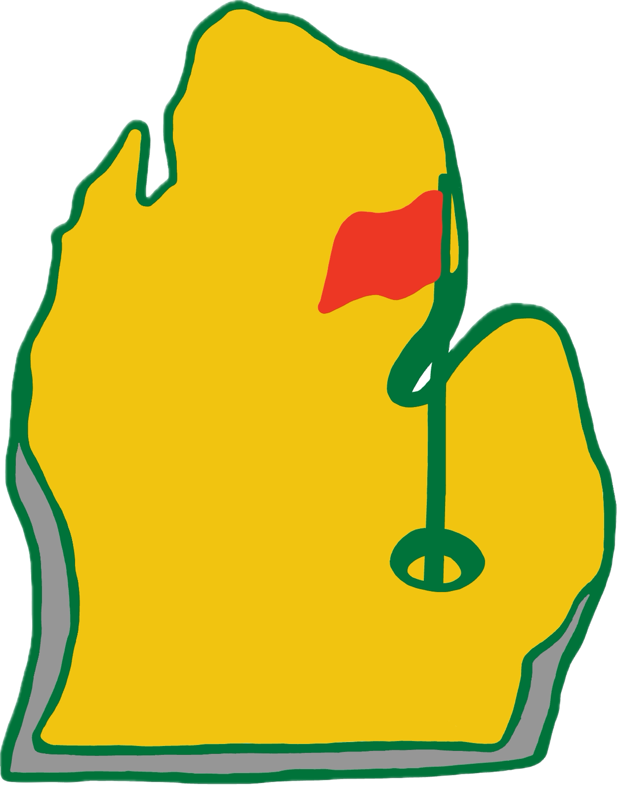
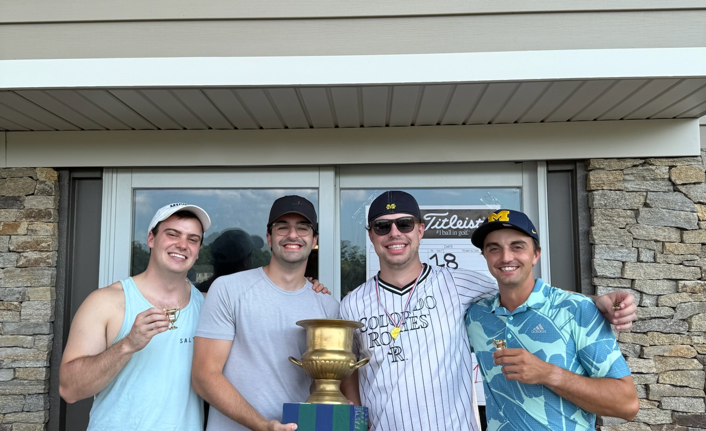

Pre-Event
Coming Summer 2026
The format is set, the rules are written, the draft is pending. The 2026 Footgolf Edition tees off this summer — pull up a chair and follow along.

The format is set, the rules are written, the draft is pending. The 2026 Footgolf Edition tees off this summer — pull up a chair and follow along.
